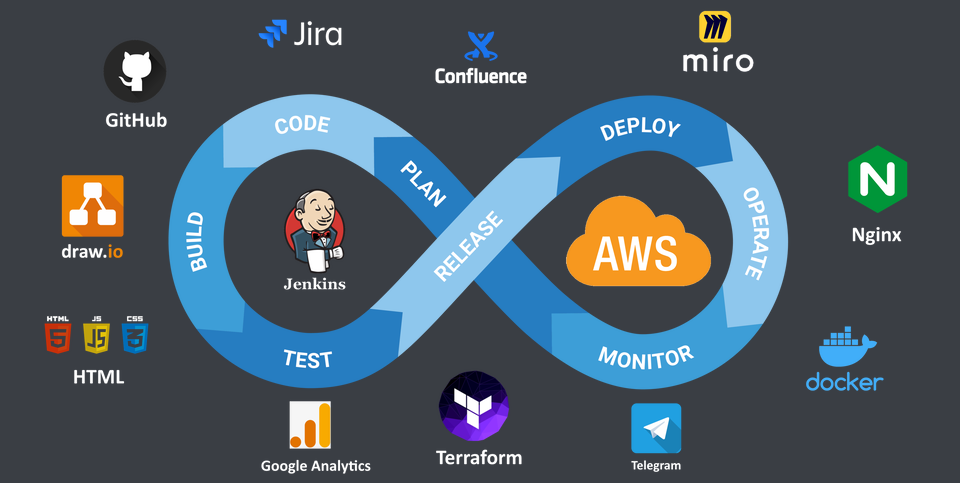

<div class="container py-3">
  <div class="card text-white bg-primary mb-3" style="max-width: 80rem;">
    <h3 class="card-header">About Project</h3>
    <div class="card-body">
      <h5 class="card-title">Overview</h5>
      
      <p>This project is created as part of learning process. It were used various DevOps tools like Jenkins, Docker,
        Git,
        HTML, CSS during the work on it. Amazon Web Services is used as platform to host tools. The infrastructure is
        described in Terraform code.</p>
      <p>The idea is to build CI/CD process for application development. Application is this website. Jenkins Server was
        chosen as a main CI/CD tool.</p>
      <h5 class="card-title">CI/CD infrastucture consists of:</h5>
      <ul>
        <li>Jenkins Server</li>
        <li>Jenkins Agent</li>
        <li>Web Server</li>
      </ul>
    </div>
  </div>
</div>